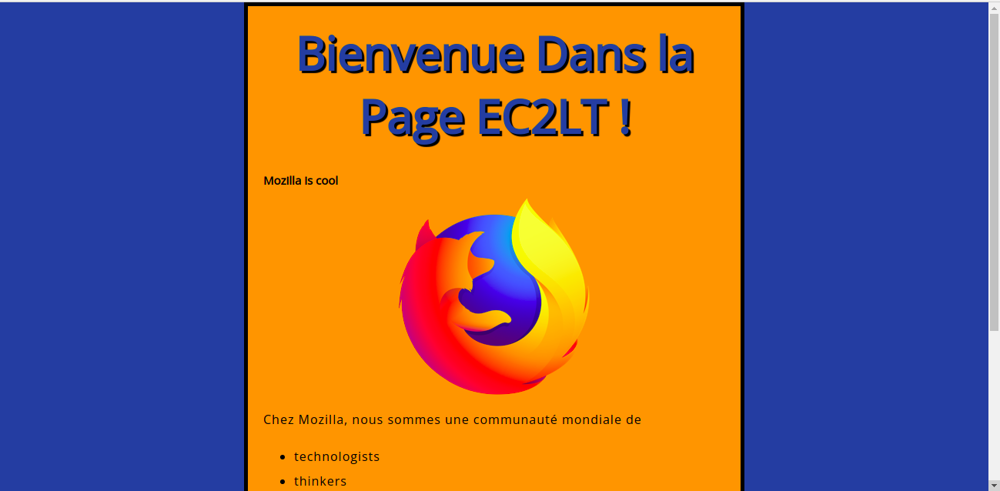
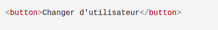

JavaScript est un langage de programmation qui ajoute de l'interactivité à votre site web (par exemple : jeux, réponses quand on clique sur un bouton ou des données entrées dans des formulaires, composition dynamique, animations). Cet article vous aide à débuter dans ce langage passionnant et vous donne une idée de ses possibilités.
des Interfaces de Programmation d'Applications pour navigateurs (API) — API intégrées aux navigateurs web permettant de créer dynamiquement du HTML, de définir des styles de CSS, de collecter et manipuler un flux vidéo depuis la webcam de l'utilisateur ou de créer des graphiques 3D et des échantillonnages audio.
des API tierces‑parties permettant aux développeurs d'incorporer dans leurs sites des fonctionnalités issues d'autres fournisseurs de contenu, comme Twitter ou Facebook.
des modèles et bibliothèques tierces‑parties applicables à votre HTML permettant de mettre en œuvre rapidement des sites et des applications.
JavaScript (« JS » en abrégé) est un langage de programmation dynamique complet qui, appliqué à un document HTML, peut fournir une interactivité dynamique sur les sites Web. Il a été inventé par Brendan Eich, co-fondateur du projet Mozilla, de la Mozilla Foundation et de la Mozilla Corporation.
JavaScript est d'une incroyable flexibilité. Vous pouvez commencer petit, avec des carrousels, des galeries d'images, des variations de mises en page et des réponses aux clics de boutons. Avec plus d'expérience, vous serez en mesure de créer des jeux, des graphiques 2D et 3D animés, des applications complètes fondées sur des bases de données et bien plus encore !
JavaScript est plutôt compact tout en étant très souple. Les développeurs ont écrit de nombreux outils sur le cœur du langage JavaScript, créant des fonctionnalités supplémentaires très simplement. Parmi ces outils, il y a :
des Interfaces de Programmation d'Applications pour navigateurs (API) — API intégrées aux navigateurs web permettant de créer dynamiquement du HTML, de définir des styles de CSS, de collecter et manipuler un flux vidéo depuis la webcam de l'utilisateur ou de créer des graphiques 3D et des échantillonnages audio. des API tierces‑parties permettant aux développeurs d'incorporer dans leurs sites des fonctionnalités issues d'autres fournisseurs de contenu, comme Twitter ou Facebook. des modèles et bibliothèques tierces‑parties applicables à votre HTML permettant de mettre en œuvre rapidement des sites et des applications.
Le paragraphe précédent laisse entrevoir quelque chose de passionnant, et cela l'est vraiment — JavaScript est une technologie web parmi les plus dynamiques. Une fois que vous commencerez à être autonome en JavaScript, vous entrerez dans une nouvelle dimension de puissance et créativité. Cependant, être à l'aise avec JavaScript est plus dur que de l'être avec HTML ou CSS. Vous pourrez démarrer petit et continuer à travailler par petites étapes de façon soutenue. Pour commencer, nous allons vous montrer comment ajouter un JavaScript basique à votre page, en créant un exemple « Hello world ! » (la norme en matière d'exemples de programmation de base).Cliquez-Ici Pour Plus d'info
Tout d'abord, allez sur votre site de test et créez un nouveau dossier nommé « scripts » (sans guillemets). Ensuite, dans le nouveau dossier scripts que vous venez de créer, créez un nouveau fichier appelé main.js. Sauvegardez-le dans votre dossier scripts. Ensuite, dans votre fichier index.html, ajoutez l'élément suivant sur une nouvelle ligne avant la balise fermante
Cet élément a le même rôle que l'élément pour le CSS — il applique le code JavaScript à la page, de sorte qu'il puisse avoir de l'effet sur le HTML (en même temps que le CSS et autres sur la page). Maintenant ajoutez le code suivant dans main.js :
let myHeading = document.querySelector('h1');
myHeading.textContent = 'Bonjour, monde !';
Assurez-vous que les fichiers HTML et JavaScript soient enregistrés puis chargez index.html dans votre navigateur. Vous devriez obtenir quelque chose comme :
Note : La raison pour laquelle nous avons placé l'élément Cliquez sur le ==> script en bas du fichier HTML est que le HTML est chargé par le navigateur dans l'ordre dans lequel il apparaît dans le fichier. Si le JavaScript est chargé en premier et qu'il est supposé affecter le HTML en dessous, il pourrait ne pas fonctionner, car le JavaScript serait chargé avant le HTML sur lequel il est supposé travailler. Par conséquent, placer JavaScript près du bas de la page HTML est souvent la meilleure stratégie.
Le texte du titre a été changé en «Bonjour, monde ! » en utilisant JavaScript. Pour cela, on a utilisé une fonction appelée querySelector() pour obtenir une référence sur l'en‑tête et la stocker dans une variable appelée myHeading. C'est assez proche de ce qu'on a fait avec les sélecteurs CSS. Lorsqu'on souhaite manipuler un élément, il faut d'abord le sélectionner.
Ensuite, nous fixons à « Bonjour, monde ! » la valeur de la propriété textContent de la variable myHeading (elle représente le contenu du titre).
Note : Les deux fonctions que vous avez utilisées ci-dessus font partie de l'API Document Object Model (DOM), qui vous permet de manipuler les documents.
Les bases du JavaScript en accéléré
Nous allons explorer les fonctionnalités de base de JavaScript pour que vous puissiez mieux comprendre comment il fonctionne. Ces fonctionnalités sont communes à la plupart des langages de programmation, si vous comprenez ces éléments en JavaScript, vous êtes en bonne voie de pouvoir programmer à peu près n'importe quoi !
Attention : Tout au long de cet article, vous pouvez saisir les lignes de code dans votre console JavaScript pour voir ce qui se passe. Pour plus de détails sur les consoles JavaScript, vous pouvez lire Découvrir les outils de développement présents dans le navigateur.
Les variables sont des conteneurs dans lesquels on peut stocker des valeurs. Pour commencer, il faut déclarer une variable avec le mot-clé let en le faisant suivre de son nom :
Note : Un point-virgule en fin de ligne indique là où se termine l'instruction ; ce n'est impérativement requis que si vous devez séparer des instructions sur une même ligne. Toutefois, certains pensent qu'il est de bonne pratique de les mettre à la fin de chaque instruction. Il y a d'autres règles à propos de leur emploi ou non‑emploi — voyez Guide des points‑virgule en JavaScript pour plus de détails.
Note : Vous pouvez utiliser (quasiment) n'importe quel nom pour nommer une variable, mais il y a quelques restrictions (voyez cet article sur les règles de nommage des variables). Si vous avez un doute, vous pouvez vérifier le nom de votre variable pour voir s'il est valide.
Note : JavaScript est sensible à la casse — myVariable est une variable différente de myvariable. Si vous avez des problèmes dans votre code, vérifiez la casse !
Une fois une variable déclarée, vous pouvez lui donner une valeur :
myVariable = 'RTN';
Vous pouvez faire les deux opérations sur une même ligne si vous le souhaitez :
let myVariable = 'RTN';
Vous retrouvez la valeur en appelant simplement la variable par son nom :
myVariable;
Une fois qu'on a donné une valeur à une variable, on peut la changer plus loin :
let myVariable = 'RTN';
myVariable = 'EC2LT';
Notez que les variables peuvent contenir des types différents de données :
| Variable | Explication | Exemple |
| Chaîne de caractères | Une suite de caractères connue sous le nom de chaîne. Pour indiquer que la valeur est une chaîne, il faut la placer entre guillemets. | let myVariable = 'RTN'; |
| Nombre | Un nombre. Les nombres ne sont pas entre guillemets. | let myVariable = 10; |
| Booléen | Une valeur qui signifie vrai ou faux. true/false sont des mots-clés spéciaux en JS, ils n'ont pas besoin de guillemets. | let myVariable = true; |
| Tableau | Une structure qui permet de stocker plusieurs valeurs dans une seule variable. | let myVariable = [1,'Bob','Étienne',10]; Référez‑vous à chaque élément du tableau ainsi : myVariable[0], myVariable[1], etc... |
| Objet | À la base de toute chose. Tout est un objet en JavaScript et peut être stocké dans une variable. Gardez cela en mémoire tout au long de ce cours. | let myVariable = document.querySelector('h1'); tous les exemples au dessus sont aussi des objets. |
Pourquoi a-t-on besoin de variables ? Et bien parce qu'elles sont essentielles à la programmation. Si les valeurs ne pouvaient pas changer, on ne pourrait rien faire de dynamique, comme personnaliser un message de bienvenue ou changer l'image affichée dans une galerie.
Il est possible d'intégrer des commentaires dans du code JavaScript, de la même manière que dans les CSS :
/*Si votre commentaire tient sur une ligne, vous pouvez utiliser deux barres obliques pour indiquer un commentaire :
// Voici un commentaire
Un opérateur est un symbole mathématique qui produit un résultat en fonction de deux valeurs (ou variables). Le tableau suivant liste certains des opérateurs les plus simples ainsi que des exemples que vous pouvez tester dans votre console JavaScript.
| Opérateur | Explication | Symbole(s) | Exemple |
| Addition | Utilisé pour ajouter deux nombres ou concaténer (accoler) deux chaînes. | + | 6 + 9; "Bonjour " + "monde !"; |
| Soustraction, multiplication, division | Les opérations mathématiques de base. | -, *, / | 9 - 3; 8 * 2; // pour multiplier, on utilise un astérisque 9 / 3; |
| Assignation | On a déjà vu cet opérateur : il affecte une valeur à une variable. | = | let myVariable = 'RTN'; |
| Égalité | Teste si deux valeurs sont égales et renvoie un booléen true/false comme résultat. | === | let myVariable = 3; myVariable === 4; |
| Négation , N'égale pas | Renvoie la valeur logique opposée à ce qu'il précède ; il change true en false, etc. Utilisé avec l'opérateur d'égalité, l'opérateur de négation teste que deux valeurs ne sont pas égales. | !, !== | L'expression de base est vraie, mais la comparaison renvoie false parce que nous la nions : let myVariable = 3; !(myVariable === 3); On teste ici que "myVariable n'est PAS égale à 3". Cela renvoie false, car elle est égale à 3. let myVariable = 3; myVariable !== 3; |
Il y a nombre d'autres opérateurs à explorer, mais nous nous en tiendrons à ceux-là pour le moment. Voir Expressions et opérateurs pour la liste complète.
Note : Mélanger les types de données peut conduire à d'étranges résultats lors des opérations, donc prenez soin de vous référer correctement à vos variables et d'obtenir les résultats attendus. Par exemple, entrez "35" + "25" dans votre console. Pourquoi n'obtenez-vous pas le résultat attendu ? Parce que les guillemets ont transformé les nombres en chaînes, et donc vous avez concaténé deux chaînes au lieu d'additionner deux nombres. Si vous entrez 35 + 25, vous obtiendrez le bon résultat.
Les structures conditionnelles sont des éléments du code qui permettent de tester si une expression est vraie ou non et d'exécuter des instructions différentes selon le résultat. La structure conditionnelle utilisée la plus fréquemment est if ... else. Par exemple :
let iceCream = 'chocolat';
if (iceCream === 'chocolat') {
alert("J'adore la glace au chocolat !");
} else {
alert("Ooooh, mais j'aurais préféré au chocolat.");
}
L'expression contenue dans if ( ... ) correspond au test — Ici, on utilise l'opérateur d'égalité (décrit plus haut) pour comparer la variable iceCream avec la chaîne de caractères chocolat pour voir si elles sont égales. Si cette comparaison renvoie true, le premier bloc de code sera exécuté. Sinon, le premier bloc est sauté et c'est le code du second bloc, celui présent après else, qui est exécuté.
Les fonctions sont un moyen de compacter des fonctionnalités en vue de leur réutilisation. Quand vous avez besoin de la procédure, vous pouvez appeler une fonction, par son nom, au lieu de ré‑écrire la totalité du code chaque fois. Nous avons déjà utilisé des fonctions plus haut, par exemple :
Ces fonctions (querySelector et alert) sont disponibles dans le navigateur et vous pouvez les utiliser où bon vous semble.
Si vous voyez quelque chose qui ressemble à un nom de variable et qui est suivi de parenthèses — () —, c'est probablement une fonction. Les fonctions prennent souvent des arguments — bouts de données dont elles ont besoin pour faire leur travail. Ils sont placés entre parenthèses, séparés par des virgules s'il y en a plusieurs.
Par exemple, la fonction alert() fait apparaître une fenêtre de pop-up dans la fenêtre du navigateur, mais vous devez donner une chaîne comme argument pour indiquer à la fonction ce que l'on souhaite écrire dans cette fenêtre.
La bonne nouvelle est que vous pouvez définir vos propres fonctions — par exemple, vous pouvez écrire une fonction toute simple qui prend deux arguments et les multiplie :
Vous pouvez déclarer cette fonction dans la console avant de l'utiliser plusieurs fois :
multiply(4, 7);
multiply(20, 20);
multiply(0.5, 3);
Note : L'instruction return indique au navigateur qu'il faut renvoyer la variable result en dehors de la fonction afin qu'elle puisse être réutilisée par ailleurs. Cette instruction est nécessaire car les variables définies à l'intérieur des fonctions sont uniquement disponibles à l'intérieur de ces fonctions. C'est ce qu'on appelle une portée (pour en savoir plus, lisez cet article).
Pour qu'un site web soit vraiment interactif, vous aurez besoin d'événements. Les événements sont des structures de code qui « écoutent » ce qui se passe dans le navigateur et déclenchent du code en réponse. Le meilleur exemple est l'événement cliquer, déclenché par le navigateur quand vous cliquez sur quelque chose avec la souris. À titre de démonstration, saisissez ces quelques lignes dans la aconsole, puis cliquez sur la page en cours :
Il existe plein de méthodes pour « attacher » un événement à un élément. Dans cet exemple, nous avons sélectionné l'élément HTML concerné et nous avons défini un gestionnaire onclick qui est une propriété qui est égale à une fonction anonyme (sans nom) qui contient le code à exécuter quand l'utilisateur clique.
On pourra noter que :
est équivalent à :
La première syntaxe est simplement plus courte.
Maintenant que nous avons vu quelques bases en JavaScript, nous allons ajouter quelques fonctionnalités intéressantes à notre site pour voir ce qu'il est possible de faire.
Dans cette section, nous allons incorporer une autre image au site en utilisant quelques fonctionnalités de l'API DOM et un peu de JavaScript pour alterner entre les deux images lorsqu'on clique sur l'image affichée.
1. Tout d'abord, trouvez une autre image à afficher sur le site. Assurez‑vous qu'elle soit de même taille que la première, ou le plus possible approchante.
2. Enregistrez cette image dans votre dossier images.
3. Renommez cette image « firefox2.png » (sans les guillemets).
4. Dans le fichier main.js, entrez ce code JavaScript (si votre code « Bonjour, monde » est toujours là, supprimez‑le) :
let myImage = document.querySelector('img');
myImage.addEventListener('click', function() {
let mySrc = myImage.getAttribute('src');
if (mySrc === 'images/firefox-icon.png') {
myImage.setAttribute('src', 'images/firefox2.png');
} else {
myImage.setAttribute('src', 'images/firefox-icon.png')
;
}
});
5. Sauvegardez tous les fichiers puis chargez index.html dans le navigateur. Maintenant, si vous cliquez sur l'image, elle doit changer pour l'autre !
Dans cet exemple, nous utilisons une référence vers l'élement img grâce à la variable myImage.
Ensuite, nous égalons la propriété du gestionnaire d'événement onclick de cette variable à une fonction sans nom (une fonction anonyme). Maintenant chaque fois que cet élément est cliqué :
Continuons en ajoutant encore un peu de code pour changer le titre de la page afin d'inclure un message d'accueil personnalisé pour le visiteur du site. Ce message d'accueil sera conservé quand l'utilisateur quittera le site et s'il y revient — nous le sauvegarderons avec l'API Web Storage. Nous ajouterons également une option pour pouvoir changer l'utilisateur et le message d'accueil si besoin.
1. Dans le fichier index.html, ajoutons la ligne suivante avant l'élément script
2. si ce n'est pas le cas (ce qui signifie que l'image a déjà été changée), la valeur de src revient à sa valeur initiale.
2. Dans le fichier main.js, ajoutons le code suivant à la fin du fichier. Cela fait référence au nouveau bouton ajouté et à l'élément de titre puis enregistrons ces références dans des variables :
let myButton = document.querySelector('button');
let myHeading = document.querySelector('h1');
Ajoutons maintenant les fonctionnalités pour avoir ce message d'accueil personnalisé (cela ne servira pas immédiatement mais un peu plus tard) :
function setUserName() {
let myName = prompt('Veuillez saisir votre nom.');
localStorage.setItem('nom', myName);
myHeading.textContent = 'Mozilla est cool, ' + myName;
}
Cette fonction utilise la fonction prompt() qui affiche une boîte de dialogue, un peu comme alert() sauf qu'elle permet à l'utilisateur de saisir des données et de les enregistrer dans une variable quand l'utilisateur clique sur OK*.* Dans notre exemple, nous demandons à l'utilisateur de saisir son nom. Ensuite, nous appelons une API appelée localStorage. Cette API permet de stocker des données dans le navigateur pour pouvoir les réutiliser ultérieurement. Nous utilisons la fonction setItem() de cette API pour stocker la donnée qui nous intéresse dans un conteneur appelé 'nom'. La valeur stockée ici est la valeur de la variable myName qui contient le nom saisi par l'utilisateur. Enfin, on utilise la propriété textContent du titre pour lui affecter un nouveau contenu.
4. Ajoutons ensuite ce bloc if ... else. Ce code correspond à l'étape d'initialisation car il sera utilisé la première fois que la page est chargée par l'utilisateur :
if (!localStorage.getItem('nom')) {
setUserName();
} else {
let storedName = localStorage.getItem('nom');
myHeading.textContent = 'Mozilla est cool, ' + storedName;
}
Ce bloc utilise l'opérateur de négation (NON logique, représenté avec le !) pour vérifier si le navigateur possède une donnée enregistrée appelée nom. Si non, la fonction setUserName() est appelée pour créer cette donnée. Si elle existe (ce qui correspond au cas où l'utilisateur est déjà venu sur la page), on la récupère avec la méthode getItem() et on définit le contenu de textContent pour le titre avec une chaîne suivie du nom de l'utilisateur, comme nous le faisons dans setUserName().
5. Enfin, on associe le gestionnaire onclick au bouton. De cette façon, quand on clique sur le bouton, cela déclenchera l'exécution de la fonction setUserName(). Ce bouton permet à l'utilisateur de modifier la valeur s'il le souhaite:
myButton.addEventListener('click', function() {
setUserName();
});
Récapitulons : la première fois que l'utilisateur viste le site, il sera invité à saisir un nom d'utilisateur. Ce nom sera utilisé pour afficher un message d'accueil personnalisé. Si l'utilisateur souhaite changer son nom, il peut cliquer sur le bouton. En supplément, le nom est enregistré pour plus tard grâce à l'API localStorage, cela permet à l'utilisateur de retrouver son nom, même s'il a fermé la page et/ou le navigateur et qu'il revient plus tard !
vous avez suivi les étapes détaillées sur cette page, vous devriez obtenir un résultat semblable à celui-ci (vous pouvez aussi voir la version que nous avons obtenue ici SCRIPT ) :